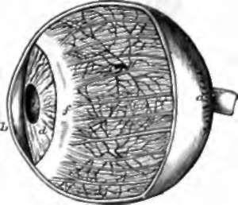
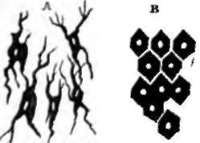
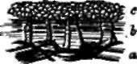

169. The Eyeball
Description
This section is from the book "Animal Physiology: The Structure And Functions Of The Human Body", by John Cleland. Also available from Amazon: Animal Physiology, the Structure and Functions of the Human Body.
169. The Eyeball
The Eyeball is a nearly spherical structure, about an inch in diameter, pierced at the back, at a point about a tenth of an inch internal to the centre, by the optic nerve, which, being in its sheath a stout cylinder a sixth of an inch thick, looks like the stalk of a berry. The outer investment of the eyeball is protective, and, in the greater part of its extent, is an exceedingly tough felted fibrous coat, called the sclerotic, thickest behind; but in front it becomes abruptly transparent, so as to form a clear window, the cornea, through which one can look into the interior. At the edge of junction, the fibres of the sclerotic are continuous with those of the cornea, the same bundle being opaque in the outer part of its extent, and transparent in the inner; but in the cornea the fibres are arranged in numerous parallel laminæ, with intercommunicating branched spaces between them. The cornea is altogether destitute of blood-vessels, though supplied with a network of nerves near its surface; and it is limited behind by an elastic lamina, and covered in front with epithelium. The lining membrane of the eyelids and front of the eye is called the conjunctiva; it is continuous with the skin at the margin of the lids; inside the lids it is pink with blood-vessels; where reflected on the sclerotic or white of the eye, it becomes more delicate and transparent, although still a distinct membrane easily detached; but when it reaches the cornea, every structure corresponding with the cutis vera is lost, and there remains only a stratified epithelium closely adherent to the proper corneal structure. No blood-vessels lie beneath this epithelium to interfere with vision; but when inflammation is excited, vessels push their way inwards with a rapidity which is exceedingly interesting, as showing how speedily capillaries can be developed.*
Fig. 113. Human Eye enlarged, with part of the cornea and sclerotic removed, a, Sclerotic; b, cornea; c, choroid coat, showing arteries and veins, and the ciliary nerves on the surface; d, iris; e, pupil; f, ciliary muscle.
170. Looking at the living eye, one sees, through the transparent cornea, the part which is coloured. This is a muscular curtain, the iris, with a circular perforation in the centre, the pupil, -which appears black, because few of the rays of light which enter it are reflected from the camera behind. The iris is attached round about to the margin of the sclerotic, where it meets the cornea; and it has two sets of muscular fibres; a circular set round its pupilary margin, which contracts the pupil; and a radiating set towards its circumference, by which the pupil is dilated. The circular fibres are governed by the third cranial nerve, the radiating fibres by the sympathetic. Division of the sympathetic in the neck causes the pupil to contract, while stimulation of the divided trunk causes it to dilate.
* An injection by Stirling, in my possession, beautifully demonstrates that the conjunctival network of capillaries, on reaching the edge of the cornea, is reflected and continuous with a deeper network belonging to the sclerotic. A similarly reflected sheet of capillaries is described by Hyrtl at the attachment of the round ligament of the hip-joint to the femur.
Fig. 114. Pigment Corpuscles of the Choroid Coat. a, Branched corpuscles from the connective tissue of the choroid coat: the white spot in each is the nucleus. B, Pigmentary epithelium on the inner surface of the choroid coat.
Fig. 115. Section of Choroid of the Ox, diagrammatic view, a, Arteries and veins; b, arterioles and venous radicles piercing the tapetum; c, membrane of Ruysch.
In making a dissection of the eye, such as every student may easily make for himself on the eye of a sheep or an ox, if the sclerotic and cornea be carefully removed, there is brought into view a second coat, the tunica vasculosa, of which the iris is the anterior part, while the posterior part, corresponding in extent with the sclerotic, is called the choroid. The choroid coat consists of exceedingly closely-set email arteries and veins, imbedded in connective tissue, the branched corpuscles of which are loaded with pigment; and the capillaries uniting these vessels are thrown inwards to the deep aspect of them, where they form one of the closest networks in the body, the membrane of Ruysch. Behind the periphery of the iris, the blood-vessels of the choroid form a corona of richly vascular projections directed inwards, and capable of considerable variation in size according to their degree of gorgement: these are called the ciliary processes; and connected with their roots is the ring of tissue which fastens the iris to the sclerotic, a white ring consisting principally of muscular fibres, the ciliary muscle.
The whole of the deep surface of the choroid and back of the iris is lined with epithelial cells loaded with dark brown pigment, which opposite the choroid are flat, hexagonal, and arranged in a single layer, but behind the iris are more densely accumulated. In persons with brown eyes, the colour of the iris is due to a deposit of pigment between its anterior fibres, corresponding with the branched pigment-corpuscles between the vessels of the choroid; but in those with blue eyes, the iris is devoid of pigment, and the colour is due to the effect of the dark pigment behind its white substance. In Albinos, persons in whom there is an absence of brown pigment from all the situations in which it is commonly found, the white hair and eye-lashes are accompanied with pink eyes, the colour of which is due to the blood, lighted up, not only with reflected, but also transmitted light.
The pigment of the choroid prevents reflection of rays from the parts of the interior of the eye on which they fall, to other points of the sensitive surface, which, were it to occur, would blur the image of the landscape, as is illustrated by the imperfect vision from which albinos suffer. But, if the student choose for dissection the eye of a sheep or some other domestic animal, he will find on the inner surface of the choroid a state of matters not existing in man, namely, a portion, opposite and above the pupilary aperture, which has an intense satin-like whiteness. This is called the tapetum, and by reflecting the rays to the part of the sensitive surface immediately in contact with it, is of service in utilising a dim light, and enabling these animals to see at night. It is this tapetum seen through the humours, which gives the brilliant greenish light to the pupil of the cat.
Continue to: